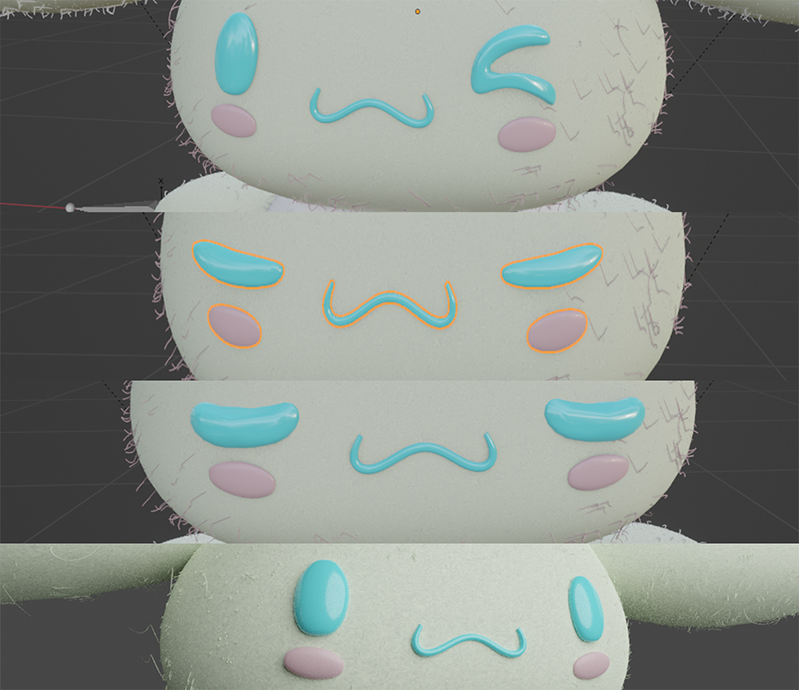
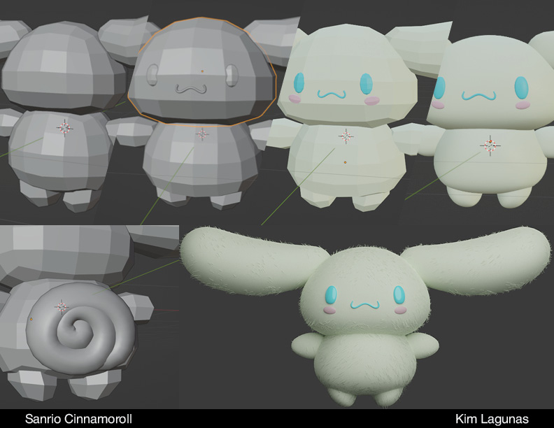
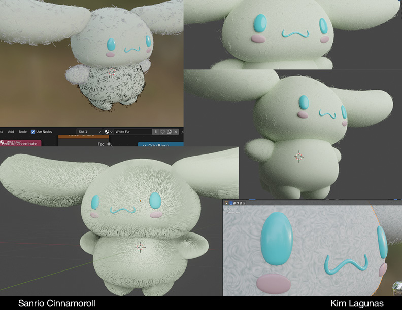
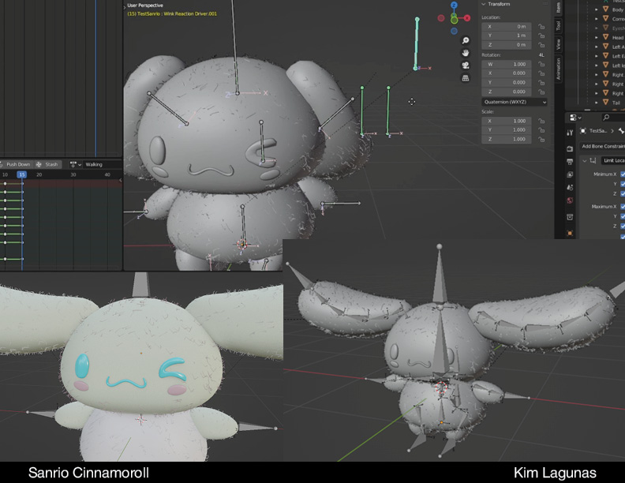
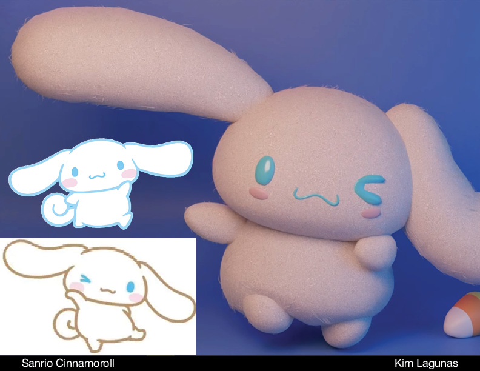

SANRIO CINNAMOROLL
Character Model and Animation





3D model of Cinnamoroll from Sanrio for Expressive Systems Research with Johannes DeYoung in Carnegie Mellon University.
The research goal was to trigger animation through voice commands. But, in order to do so, we needed a character model. While we could have pulled from an online resource, I really wanted to have full control of the character model and rig.
I also used this as an opportunity to explore Blender's shapekeys via the eyes.
We accomplished the research goal while also applying my love for the Sanrio franchise! :)